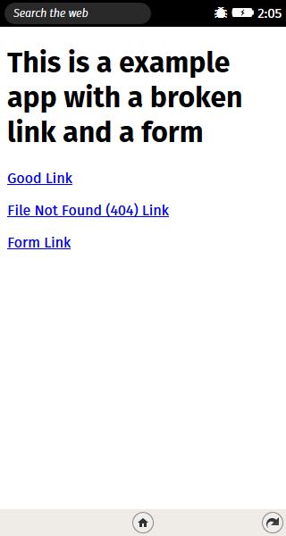
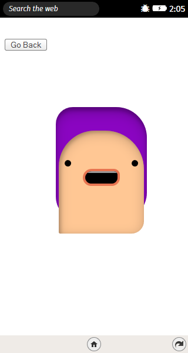
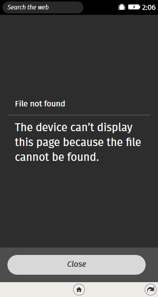
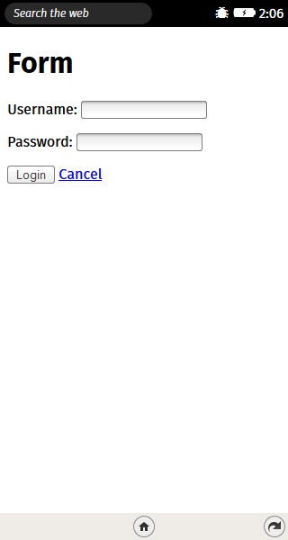

   
digraph { node [rx=5 ry=5 labelStyle="font: 300 14px 'Helvetica Neue', Helvetica"]; edge [labelStyle="font: 300 14px 'Helvetica Neue', Helvetica"]; 0 [labelType="html" label="0"]; 1 [labelType="html" label="1"]; 2 [labelType="html" label="2"]; 3 [labelType="html" label="3"]; 0->1[labelType="html" label=""]; 1->0[labelType="html" label=""]; 0->2[labelType="html" label=""]; 0->3[labelType="html" label=""]; 3->0[labelType="html" label=""]; 3->0[labelType="html" label=""]; }
State Diagram (Scrolling on the canvas to zoom in / zoom out)
Graph drawn with
dagre-d3